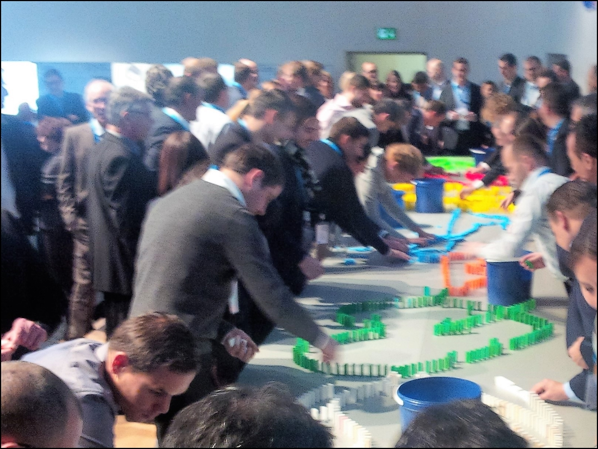

„Big Picture, klare Regeln"
Supply Chains: Transparenz schafft Profit.
Sprints, Roadmap und Leadership Operating System für Tempo und Verlässlichkeit.

Segmentation Sprint (½ Tag)
Wie viele Supply Chains managen wir?
Ihr Wirkungsbild in 4 h - mit klaren Next Steps.
Segment-Matrix | segmentierte Policies | Pilot-Scope

Operating Model Sprint (½ Tag)
Ihr Big Picture in 4 h
Visual Operating Model | Decoupling Points | Tope Hebel
Roadmap - SCM Projektportfolio (4 Wochen)
Von langer Projektliste zum wirksamen SCM-Portfolio – in 4 Wochen.
Top Hebel | 90-Tage-Launch | Cash/Service/Kosten

Transformation Programme (3 Monate)
Designreife Supply Chain in 12 Wochen – eine Sprache, bewährte Struktur, beschleunigtes Vorgehen.
Operating-Model | Policies | DIY-Methodik